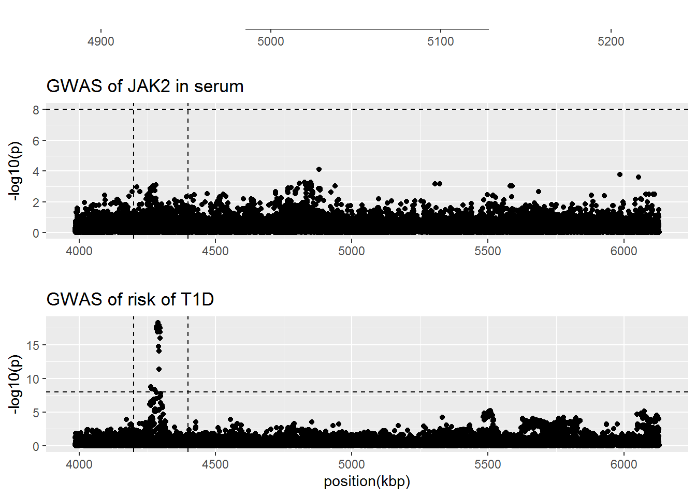
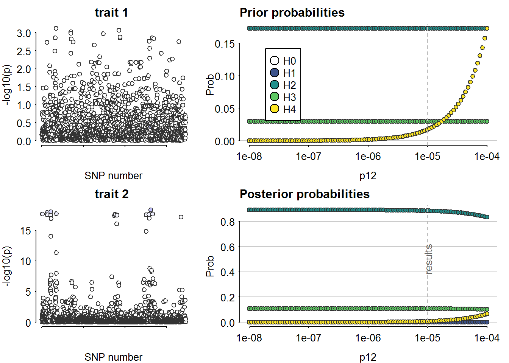

Last updated: 2022-11-05
Checks: 7 0
Knit directory: Rotaatio-2022/
This reproducible R Markdown analysis was created with workflowr (version 1.7.0). The Checks tab describes the reproducibility checks that were applied when the results were created. The Past versions tab lists the development history.
Great! Since the R Markdown file has been committed to the Git repository, you know the exact version of the code that produced these results.
Great job! The global environment was empty. Objects defined in the global environment can affect the analysis in your R Markdown file in unknown ways. For reproduciblity it’s best to always run the code in an empty environment.
The command set.seed(20220313) was run prior to running
the code in the R Markdown file. Setting a seed ensures that any results
that rely on randomness, e.g. subsampling or permutations, are
reproducible.
Great job! Recording the operating system, R version, and package versions is critical for reproducibility.
Nice! There were no cached chunks for this analysis, so you can be confident that you successfully produced the results during this run.
Great job! Using relative paths to the files within your workflowr project makes it easier to run your code on other machines.
Great! You are using Git for version control. Tracking code development and connecting the code version to the results is critical for reproducibility.
The results in this page were generated with repository version e86595d. See the Past versions tab to see a history of the changes made to the R Markdown and HTML files.
Note that you need to be careful to ensure that all relevant files for
the analysis have been committed to Git prior to generating the results
(you can use wflow_publish or
wflow_git_commit). workflowr only checks the R Markdown
file, but you know if there are other scripts or data files that it
depends on. Below is the status of the Git repository when the results
were generated:
Ignored files:
Ignored: .RData
Ignored: .Rhistory
Ignored: .Rproj.user/
Ignored: analyses/.Rhistory
Untracked files:
Untracked: .Rprofile
Untracked: .gitattributes
Untracked: .gitignore
Untracked: CRP.Rmd
Untracked: Functional_variants.pdf
Untracked: IL2RB.Rmd
Untracked: IL6R.Rmd
Untracked: IL6ST.Rmd
Untracked: MONDO_0005147-known-drugs.tsv
Untracked: MR-articles-pubmed.csv
Untracked: Mimicking-randomized-controlled-trials-with-genome-wide-data-to-ritta.pptx
Untracked: Mimicking-randomized-controlled-trials-with-genome-wide-data.pptx
Untracked: README.md
Untracked: README.txt
Untracked: TNF.Rmd
Untracked: _workflowr.yml
Untracked: analyses/_site.yml
Untracked: analyses/about.Rmd
Untracked: analyses/index.Rmd
Untracked: analyses/license.Rmd
Untracked: articles/
Untracked: code/
Untracked: data/
Untracked: figures/
Untracked: guidelines-for-review-of-MR-studies-20177.pdf
Untracked: ld_finnge.zip
Untracked: mendelian randomization.Rproj
Untracked: output/
Unstaged changes:
Deleted: analyses/IL6R.Rmd
Note that any generated files, e.g. HTML, png, CSS, etc., are not included in this status report because it is ok for generated content to have uncommitted changes.
These are the previous versions of the repository in which changes were
made to the R Markdown (analyses/JAK2.Rmd) and HTML
(docs/JAK2.html) files. If you’ve configured a remote Git
repository (see ?wflow_git_remote), click on the hyperlinks
in the table below to view the files as they were in that past version.
| File | Version | Author | Date | Message |
|---|---|---|---|---|
| Rmd | e86595d | Jaakko Koskenniemi | 2022-11-05 | wflow_publish(c("analyses/CRP.Rmd", "analyses/CXCL10.Rmd", "analyses/IL2RA.Rmd", |
Load packages
library(tidyverse)-- Attaching packages --------------------------------------- tidyverse 1.3.1 --v ggplot2 3.3.6 v purrr 0.3.4
v tibble 3.1.7 v dplyr 1.0.9
v tidyr 1.2.0 v stringr 1.4.0
v readr 2.1.2 v forcats 0.5.1-- Conflicts ------------------------------------------ tidyverse_conflicts() --
x dplyr::filter() masks stats::filter()
x dplyr::lag() masks stats::lag()library(data.table)
Attaching package: 'data.table'The following objects are masked from 'package:dplyr':
between, first, lastThe following object is masked from 'package:purrr':
transposelibrary(coloc)This is a new update to coloc.library(TwoSampleMR)TwoSampleMR version 0.5.6
[>] New: Option to use non-European LD reference panels for clumping etc
[>] Some studies temporarily quarantined to verify effect allele
[>] See news(package='TwoSampleMR') and https://gwas.mrcieu.ac.uk for further detailslibrary(ggpubr)
library(ieugwasr)API: public: http://gwas-api.mrcieu.ac.uk/
Attaching package: 'ieugwasr'The following object is masked from 'package:TwoSampleMR':
ld_matrixGWAS sumstat of type 1 diabetes was obtained from the study by Chiou et al. (Nature 2021, https://doi.org/10.1038/s41586-021-03552-w). GWAS sumstat for protein levels of JAK2 was obtained from the study by Ferkingstad et al. (Nature 2021, https://doi.org/10.1038/s41588-021-00978-w). Variants within 1 megabase before the start site of JAK2 and 1 megabase after the stop site are included.
JAK2_gwas <- readRDS("data/sumstats/cisdata/JAK2_gwas_data.rds") %>% tibble()
JAK2_anno <- readRDS("data/sumstats/cisdata/JAK2_anno_data.rds") %>% tibble()
JAK2_T1D <- readRDS("data/sumstats/cisdata/JAK2_T1D_data_harm.rds") %>% tibble()Ferkingstad et al. state in their README file
Note that in the summary statistics files, the effectAllele is not always the minor allele, and therefore the ImpMAF is not always the frequency of the effect allele (it may be the frequency of the other allele). We now provide an Extra annotation file (assocvariants.annotated.txt.gz) that also includes the effect allele frequency – This file can be mapped to the other files using the “Name” column. Also, the summary statistics files sometimes incorrectly have effectAllele=otherAllele for multiallelic variants. In these cases the effectAllele is correct, but the otherAllele should be ‘!’, meaning that the effectAllele is tested against the other (two or more) alleles (using the ‘!’ sign as shorthand for ‘not effectAllele’). This has been corrected in the file Extra annotation file (assocvariants.annotated.txt.gz).
Finally, a subset of the variants in the summary statistics files should be excluded due to quality issues. These variants are listed in a separate Excluded variants file (assocvariants.excluded.txt.gz). The Extra annotation file (assocvariants.annotated.txt.gz) does not include these variants.
#merge data (exclude those observations that are missing in anno)
JAK2_gwas <- right_join(JAK2_gwas, JAK2_anno, by = "Name")
rm(JAK2_anno)All cases where the variables in the two data files (annotation and original sumstat of Ferkingstad) are either instances when - rsid has not been assigned (and the original sumstat has NA and the annotation “.”) - multiallelic allele, where the other allele is annotated with a “!”
We decided to remove the multiallelic SNPs anyway, and after them, the columns were identical (equal and not discordant in terms of missing observations).
#Remove multiallelic snps and recoed rsid "." to NA
JAK2_gwas <- JAK2_gwas %>%
mutate(rsids.y = replace(rsids.y, rsids.y == ".", NA)) %>%
filter(otherAllele.y != "!")
#Chrom, Pos, Rsids, effectAllele and otherAllele are the same in different files
JAK2_gwas %>%
filter(Chrom.x != Chrom.y | (!is.na(Chrom.x) & is.na(Chrom.y)) | (!is.na(Chrom.y) & is.na(Chrom.x)) |
Pos.x != Pos.y | (!is.na(Pos.x) & is.na(Pos.y)) | (!is.na(Pos.y) & is.na(Pos.x)) |
rsids.x != rsids.y | (!is.na(rsids.x) & is.na(rsids.y)) | (!is.na(rsids.y) & is.na(rsids.x)) |
effectAllele.x != effectAllele.y | (!is.na(effectAllele.x) & is.na(effectAllele.y)) | (!is.na(effectAllele.y) & is.na(effectAllele.x))|
otherAllele.x != otherAllele.y | (!is.na(otherAllele.x) & is.na(otherAllele.y)) | (!is.na(otherAllele.y) & is.na(otherAllele.x)))# A tibble: 3 x 18
Chrom.x Pos.x Name rsids.x effec~1 other~2 Beta Pval minus~3 SE N
<chr> <int> <chr> <chr> <chr> <chr> <dbl> <dbl> <dbl> <dbl> <int>
1 <NA> NA chr9:41~ <NA> <NA> <NA> NA NA NA NA NA
2 <NA> NA chr9:48~ <NA> <NA> <NA> NA NA NA NA NA
3 <NA> NA chr9:58~ <NA> <NA> <NA> NA NA NA NA NA
# ... with 7 more variables: ImpMAF <dbl>, Chrom.y <chr>, Pos.y <int>,
# rsids.y <chr>, effectAllele.y <chr>, otherAllele.y <chr>,
# effectAlleleFreq <dbl>, and abbreviated variable names 1: effectAllele.x,
# 2: otherAllele.x, 3: minus_log10_pval
# i Use `colnames()` to see all variable namesThus, only those values variables with .x in their name are preserved. Here, we also remove the remaining multiallelic SNPs (where effect allele equals the other allele.)
#Discard all variables that end with an ".y"
JAK2_gwas <- JAK2_gwas %>%
select(!ends_with(".y")) #remove column names *.y
#Remove ".x" from variable names
JAK2_gwas <- JAK2_gwas %>%
rename_with(~gsub(".x", "", .x, fixed = TRUE))
#Remove the other version of the coding of multiallelic variants
JAK2_gwas <- JAK2_gwas %>%
filter(effectAllele != otherAllele)Please note that the GWAS sumstat of type 1 diabetes has been harmonized by GWAS catalog, but the GWAS sumstat for serum JAK2 levels has not been harmonized.
#Rename JAK2 variants
JAK2_gwas <- JAK2_gwas %>%
rename(rsid = rsids,
EA_prot = effectAllele, NEA_prot = otherAllele,
EAF_prot=effectAlleleFreq, BETA_prot=Beta,
p_prot = Pval,
minus_log10_p_prot = minus_log10_pval,
SE_prot = SE, N_prot = N, ImpMAF_prot = ImpMAF, variant_id_prot = Name)
#Rename columns
JAK2_T1D <- JAK2_T1D %>%
rename(Chrom = chr, variant_id_T1D = id, EA_T1D = effectAllele, NEA_T1D = otherAllele, BETA_T1D = beta, SE_T1D = SE,
p_T1D = pval, EAF_T1D = EAF)
#What is the difference between position and base_pair_location?
JAK2_T1D %>%
filter(pos != base_pair_location) %>%
select(Chrom, rsid, pos, base_pair_location) %>%
print(n=200) #none# A tibble: 0 x 4
# ... with 4 variables: Chrom <chr>, rsid <chr>, pos <int>,
# base_pair_location <int>
# i Use `colnames()` to see all variable names#What's the difference between Chrom and chromosome?
JAK2_T1D %>%
filter(Chrom != chromosome) %>%
select(Chrom, rsid, pos, base_pair_location) %>%
print(n=200) #none# A tibble: 0 x 4
# ... with 4 variables: Chrom <chr>, rsid <chr>, pos <int>,
# base_pair_location <int>
# i Use `colnames()` to see all variable names#Remove chromosome and base_pair_location
JAK2_T1D <- JAK2_T1D %>% select(-chromosome, -base_pair_location)
#Remove SNPs with multiple rsids
JAK2_gwas <- JAK2_gwas %>% filter(!str_detect(rsid, ","))
#remove "chr" from the beginning of the JAK2_gwas
JAK2_gwas <- JAK2_gwas %>%
mutate(variant_id_prot = str_replace(variant_id_prot, "chr", "")) %>%
mutate(variant_id_prot = str_replace(variant_id_prot, ":", "_")) %>%
mutate(variant_id_prot = str_replace(variant_id_prot, ":", "_")) %>%
mutate(variant_id_prot = str_replace(variant_id_prot, ":", "_")) %>%
mutate(variant_id_prot = str_replace(variant_id_prot, ":", "_"))
#merge the data
JAK2 <- inner_join(JAK2_gwas, JAK2_T1D, by = "rsid")
JAK2 %>%
filter(Chrom.x != Chrom.y ) %>%
select(Chrom.x, Chrom.y) %>% print(n=500) #all are the same# A tibble: 0 x 2
# ... with 2 variables: Chrom.x <chr>, Chrom.y <chr>
# i Use `colnames()` to see all variable namesJAK2 <- JAK2 %>% select(-Chrom.y) %>% rename(Chrom = Chrom.x)
JAK2 %>% colnames() [1] "Chrom" "Pos" "variant_id_prot"
[4] "rsid" "EA_prot" "NEA_prot"
[7] "BETA_prot" "p_prot" "minus_log10_p_prot"
[10] "SE_prot" "N_prot" "ImpMAF_prot"
[13] "EAF_prot" "pos" "variant_id_T1D"
[16] "EA_T1D" "NEA_T1D" "BETA_T1D"
[19] "SE_T1D" "p_T1D" "EAF_T1D" #Remove those without a rsid
JAK2 <- JAK2 %>% filter(!is.na(rsid))
#examine how many SNPs have disconcordant EAF <40% OR >60% between the two data sets
JAK2 %>%
filter(!(EAF_T1D < 0.40 & EAF_prot < 0.40) | (EAF_T1D > 0.60 & EAF_prot > 0.60))# A tibble: 1,838 x 21
Chrom Pos variant_~1 rsid EA_prot NEA_p~2 BETA_~3 p_prot minus~4 SE_prot
<chr> <int> <chr> <chr> <chr> <chr> <dbl> <dbl> <dbl> <dbl>
1 chr9 3987329 9_3987329~ rs78~ A G 0.0104 0.203 0.693 0.00817
2 chr9 3989685 9_3989685~ rs48~ G C 0.0978 0.675 0.171 0.233
3 chr9 3989789 9_3989789~ rs48~ T C 0.0044 0.629 0.201 0.00911
4 chr9 3989993 9_3989993~ rs68~ G A 0.0046 0.613 0.212 0.00910
5 chr9 3990092 9_3990092~ rs57~ T A 0.0045 0.616 0.211 0.00897
6 chr9 3991729 9_3991729~ rs70~ T C -0.0123 0.155 0.811 0.00864
7 chr9 3994090 9_3994090~ rs52~ A T 0.0901 0.615 0.211 0.179
8 chr9 4002823 9_4002823~ rs50~ A G -0.0202 0.125 0.903 0.0132
9 chr9 4008954 9_4008954~ rs66~ T C -0.0171 0.200 0.699 0.0133
10 chr9 4023987 9_4023987~ rs15~ T A 0.0028 0.729 0.137 0.00810
# ... with 1,828 more rows, 11 more variables: N_prot <int>, ImpMAF_prot <dbl>,
# EAF_prot <dbl>, pos <int>, variant_id_T1D <chr>, EA_T1D <chr>,
# NEA_T1D <chr>, BETA_T1D <dbl>, SE_T1D <dbl>, p_T1D <chr>, EAF_T1D <dbl>,
# and abbreviated variable names 1: variant_id_prot, 2: NEA_prot,
# 3: BETA_prot, 4: minus_log10_p_prot
# i Use `print(n = ...)` to see more rows, and `colnames()` to see all variable names#JAK2 %>%
#filter(flipped==1) %>%
#filter((EAF_prot > 0.4 & EAF_prot < 0.6) | (EAF_T1D > 0.4 & EAF_T1D < 0.6)) #%>% select (rsid, EA_prot, EA_T1D, NEA_prot, NEA_T1D, EAF_prot, EAF_T1D) %>% #print(n=200)
# remove SNPs with EAF 40-60%
#JAK2 <- JAK2 %>% filter(!(flipped == 1 & (EAF_prot > 0.4 & EAF_prot < 0.6) | #(EAF_T1D > 0.4 & EAF_T1D < 0.6)))#create Manhattan plots with vertical lines indicating the selected area (see below 2.4)
JAK2_prot.fig <-
JAK2 %>%
ggplot(aes(x = Pos/1000, y=minus_log10_p_prot)) +
geom_point()+
geom_hline(yintercept=8, linetype="dashed")+
geom_vline(xintercept=4.2e6/1000, linetype="dashed")+
geom_vline(xintercept=4.4e6/1000, linetype="dashed")+
ggtitle("GWAS of JAK2 in serum") +
ylab("-log10(p)") +
xlab(NULL)
JAK2_T1D.fig <-
JAK2 %>%
mutate(minus_log10_p_T1D = -log10(as.numeric(p_T1D))) %>%
ggplot()+
geom_point(mapping=aes(x = Pos/1000, y=minus_log10_p_T1D))+
geom_hline(yintercept=8, linetype="dashed")+
geom_vline(xintercept=4.2e6/1000, linetype="dashed")+
geom_vline(xintercept=4.4e6/1000, linetype="dashed")+
ggtitle("GWAS of risk of T1D") +
ylab("-log10(p)") +
xlab("position(kbp)")
layer_scales(JAK2_T1D.fig)$x$range$range[1] 3985.359 6128.137JAK2_gene.fig <-
ggplot(data = JAK2) +
geom_blank() +
geom_segment(x=4985.033, xend=5128.183, y=1, yend=1, size = 2) +
annotate("text", label = "JAK2", x= (4985.033 + 5128.183) / 2, y=1, hjust = 0.5, vjust = -1) +
xlim(4885.033, 5228.183) +
ylim(0.75, 2) +
ylab(NULL) + xlab(NULL) +
theme(axis.text.y = element_blank(), axis.ticks.y = element_blank(),
panel.grid.major.y = element_blank(),
panel.grid.minor.y = element_blank())
ggarrange(JAK2_gene.fig, JAK2_prot.fig, JAK2_T1D.fig,
heights = c(1, 3, 3), nrow = 3,
ncol = 1, align = "hv")
ggsave("figures/JAK2-manhattan-combined-fig.pdf", height = 6, width = 8, units = "in")#select the area containing significant SNPs
JAK2_close <- JAK2 %>%
filter(Pos > 4.2e6 & Pos < 4.4e6)
#filter a few multiallelic snps away
duplicated_snps <- JAK2_close %>%
filter(duplicated(rsid)) %>% pull(rsid)
JAK2_close <- JAK2_close %>%
filter(!rsid %in% duplicated_snps)
#remove the SNP with MAF=0
JAK2_close <- JAK2_close %>%
filter(EAF_T1D != 0)
JAK2_close <- JAK2_close %>%
mutate(MAF_T1D = ifelse(EAF_T1D > 0.5, 1-EAF_T1D, EAF_T1D)) %>%
mutate(MAF_prot = ifelse(EAF_prot > 0.5, 1-EAF_prot, EAF_prot))
JAK2_close <- JAK2_close %>%
filter(MAF_T1D != 0 & MAF_prot != 0)
D1 <- list(
type = "quant", # quantitative trait
beta = JAK2_close$BETA_prot,
varbeta = JAK2_close$SE_prot^2,
pvalues = JAK2_close$p_prot,
N = JAK2_close$N_prot,
MAF = as.numeric(JAK2_close$MAF_prot),
pos = JAK2_close$Pos,
snp = JAK2_close$rsid,
sdY = 1)
D2 <- list(
type = "cc", # case-control trait
beta = JAK2_close$BETA_T1D,
varbeta = JAK2_close$SE_T1D^2,
pvalues = JAK2_close$p_T1D,
N = 18942+501638, # Case-control study (Chiou et al. 2021 Nature)
s = 18942/(18942+501638), # N_case/(N_case+ N_ctrl)
MAF = as.numeric(JAK2_close$MAF_T1D),
pos = JAK2_close$Pos,
snp = JAK2_close$rsid)
coloc_results_JAK2 <- coloc.abf(D1, D2, p1 = 1e-4, p2 = 1e-4, p12 = 1e-5)Warning in check_dataset(d = dataset1, 1): minimum p value is: 0.00076101
If this is what you expected, this is not a problem.
If this is not as small as you expected, please check the 02_data vignette.PP.H0.abf PP.H1.abf PP.H2.abf PP.H3.abf PP.H4.abf
2.09e-13 2.55e-14 8.85e-01 1.08e-01 6.91e-03
[1] "PP abf for shared variant: 0.691%"sensitivity(coloc_results_JAK2, "H4 > 0.1")Results fail decision rule H4 > 0.1
Älkää tehkö vielä tätä. Jätetään se kuitenkin tähän vielä jatkoa varten.
#
# ldmat_CXCL10 <- ld_matrix_local(
# IL2RA_T1D_merged$rsid,
# plink_bin = genetics.binaRies::get_plink_binary(),
# bfile = "C:/Users/jajoko/Documents/MR Projects/plinkref/EUR")
#
# #In LD-mat the rsid are followed by reference and effect alleles (e.g. rs10905492_G_A). The effect alleles have to be harmonized between the LD matrix and data. The data is changed to follow ld matrix, because that is easier to do than vice versa.
#
# #Extract rsid, non-effect allele and effect allele from LD-matrix
# snps <- data.frame(rsid_nea_ea = rownames(ldmat_IL2RA))
# snps <- snps %>%
# mutate(nea_ea = str_sub(rsid_nea_ea, -4,-1))
#
# #Check that names in LD-matrix do not include indels (eg. G to CT)
# snps %>% mutate(underscore = str_sub(nea_ea, 1, 1)) %>%
# filter(underscore != "_") #all have _ as the fourth last character, indicating that they are indeed single nucleotides
#
# #Extract ea, nea, and rsid
# snps <- snps %>%
# mutate(nea = str_sub(nea_ea, 2,2), ea = str_sub(nea_ea, 4,4)) %>%
# mutate(rsid = str_sub(rsid_nea_ea, 1, -5))
#
#
# #prepare for merge
# snps <- snps %>%
# select(-nea_ea) %>%
# rename(nea_ldmat = nea, ea_ldmat = ea, rsid_ldmat = rsid_nea_ea, rsid = rsid)
#
# #Merge
# IL2RA_T1D_merged_ldsnps <-
# left_join(snps, IL2RA_T1D_merged, by = "rsid")
#
# #check for alignment
# IL2RA_T1D_merged_ldsnps %>%
# filter(ea_ldmat != NEA_T1D_aligned) %>% nrow()
#
# IL2RA_T1D_merged_ldsnps %>%
# filter(ea_ldmat == NEA_T1D_aligned) %>% nrow()
#
# IL2RA_T1D_merged_ldsnps
#
#
# #ongelma: kuinka saada ld-matriisin snp:t samaan muotoon kuin IL2RA-datan??
#
#
# D1 <- list(
# type = "quant", # quantitative trait
# beta = IL2RA_T1D_merged_onlymat$BETA_prot_aligned,
# varbeta = IL2RA_T1D_merged_onlymat$SE_prot^2,
# pvalues = IL2RA_T1D_merged_onlymat$p_prot,
# N = IL2RA_T1D_merged_onlymat$N_prot,
# MAF = as.numeric(IL2RA_T1D_merged_onlymat$MAF_prot),
# snp = IL2RA_T1D_merged_onlymat$rsid,
# LD = ldmat_IL2RA,
# sdY = 1)
#
# D2 <- list(
# type = "cc", # case-control trait
# beta = IL2RA_T1D_merged_onlymat$BETA_T1D_aligned,
# varbeta = IL2RA_T1D_merged_onlymat$SE_T1D^2,
# pvalues = IL2RA_T1D_merged_onlymat$p_T1D,
# N = IL2RA_T1D_merged_onlymat$N_T1D, # Case-control study (Chiou et al. 2021 Nature)
# s = 18942/(18942+501638), # N_case/(N_case+ N_ctrl)
# MAF = as.numeric(IL2RA_T1D_merged_onlymat$MAF_T1D),
# LD = ldmat_IL2RA,
# snp = IL2RA_T1D_merged_onlymat$rsid)
#
# check_alignment(D1)
sessionInfo()R version 4.2.1 (2022-06-23 ucrt)
Platform: x86_64-w64-mingw32/x64 (64-bit)
Running under: Windows 10 x64 (build 14393)
Matrix products: default
locale:
[1] LC_COLLATE=Finnish_Finland.1252 LC_CTYPE=Finnish_Finland.1252
[3] LC_MONETARY=Finnish_Finland.1252 LC_NUMERIC=C
[5] LC_TIME=Finnish_Finland.1252
attached base packages:
[1] stats graphics grDevices utils datasets methods base
other attached packages:
[1] ieugwasr_0.1.5 ggpubr_0.4.0 TwoSampleMR_0.5.6 coloc_5.1.0.1
[5] data.table_1.14.2 forcats_0.5.1 stringr_1.4.0 dplyr_1.0.9
[9] purrr_0.3.4 readr_2.1.2 tidyr_1.2.0 tibble_3.1.7
[13] ggplot2_3.3.6 tidyverse_1.3.1 workflowr_1.7.0
loaded via a namespace (and not attached):
[1] matrixStats_0.62.0 fs_1.5.2 lubridate_1.8.0 httr_1.4.3
[5] rprojroot_2.0.3 tools_4.2.1 backports_1.4.1 bslib_0.4.0
[9] utf8_1.2.2 R6_2.5.1 irlba_2.3.5 nortest_1.0-4
[13] DBI_1.1.3 colorspace_2.0-3 withr_2.5.0 tidyselect_1.1.2
[17] gridExtra_2.3 processx_3.6.1 compiler_4.2.1 git2r_0.30.1
[21] glmnet_4.1-4 cli_3.3.0 rvest_1.0.2 xml2_1.3.3
[25] labeling_0.4.2 sass_0.4.2 scales_1.2.0 callr_3.7.1
[29] mixsqp_0.3-43 digest_0.6.29 rmarkdown_2.14 pkgconfig_2.0.3
[33] htmltools_0.5.2 mr.raps_0.2 highr_0.9 dbplyr_2.2.1
[37] fastmap_1.1.0 rlang_1.0.3 readxl_1.4.0 susieR_0.12.16
[41] rstudioapi_0.13 farver_2.1.1 shape_1.4.6 jquerylib_0.1.4
[45] generics_0.1.3 jsonlite_1.8.0 car_3.1-0 magrittr_2.0.3
[49] Matrix_1.4-1 Rcpp_1.0.8.3 munsell_0.5.0 fansi_1.0.3
[53] abind_1.4-5 viridis_0.6.2 lifecycle_1.0.1 stringi_1.7.6
[57] whisker_0.4 yaml_2.3.5 carData_3.0-5 plyr_1.8.7
[61] grid_4.2.1 promises_1.2.0.1 crayon_1.5.1 lattice_0.20-45
[65] cowplot_1.1.1 splines_4.2.1 haven_2.5.0 hms_1.1.1
[69] knitr_1.39 ps_1.7.1 pillar_1.8.0 ggsignif_0.6.3
[73] codetools_0.2-18 reprex_2.0.1 glue_1.6.2 evaluate_0.15
[77] getPass_0.2-2 modelr_0.1.8 vctrs_0.4.1 tzdb_0.3.0
[81] httpuv_1.6.5 foreach_1.5.2 cellranger_1.1.0 gtable_0.3.0
[85] reshape_0.8.9 assertthat_0.2.1 cachem_1.0.6 xfun_0.31
[89] broom_1.0.0 rstatix_0.7.0 later_1.3.0 survival_3.3-1
[93] viridisLite_0.4.0 iterators_1.0.14 ellipsis_0.3.2